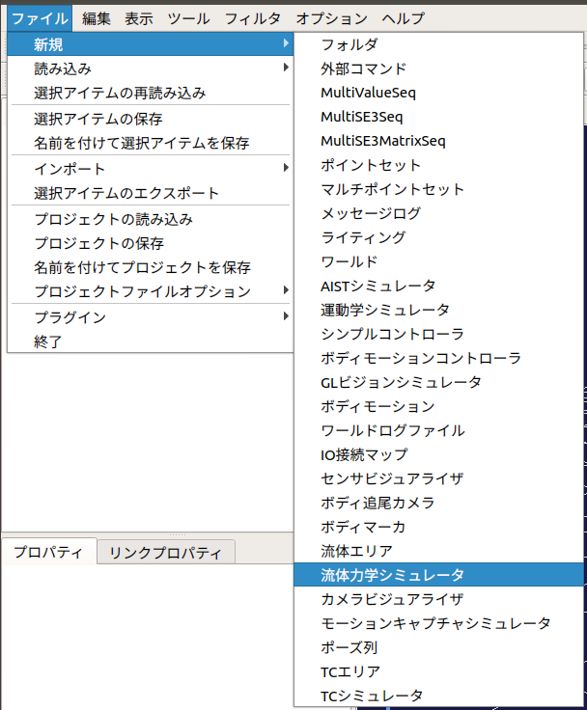
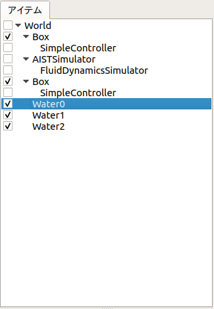

ROV／UAVのシミュレーション¶
ここでは、流体力学シミュレータを使った水中遊泳ロボット（ROV）と無人航空機（UAV）のシミュレートの仕方を説明します。
流体力学シミュレータの作成と設定¶
ここではChoreonoidの標準のシミュレータアイテムである「AISTシミュレータ」を用います。メインメニューの「ファイル」-「新規」-「流体力学シミュレータ」を選択して生成してください。生成した流体力学シミュレータは、AISTシミュレータアイテムの小アイテムとして配置します。
流体エリアアイテムの作成と設定¶
流体エリアアイテムは、Choreonoidのワールド内に水・空気等が存在する領域を仮想的に定義するためのアイテムです。メインメニューの「ファイル」-「新規」-「流体エリア」を選択して生成してください。生成した流体エリアアイテムは、ワールドアイテムの小アイテムとして配置します。以下の例では、流体エリアアイテムを「Water0」〜「Water2」として3つ生成しています。このように複数の流体エリアアイテムを生成することで、Choreonoidのワールド内により詳細な流体エリアを設定することができます。
Note
この流体アイテムはアイテムツリービューのチェックボックスを使用して表示・非表示を切り替えることができます。また、非表示の流体エリアアイテムはシミュレーションの対象から除外されます。
流体エリアアイテムのパラメータは以下の通りです。
| パラメータ | デフォルト値 | 単位 | 意味 |
|---|---|---|---|
| 密度 | 0.0 | kg/m3 | 流体の密度を指定します。 |
| 粘度 | 0.0 | Pa*s | 流体の粘度を指定します。 |
| 定常流 | 0, 0, 0 | N, N, N | 流体エリア中にある物体に与える外力を指定します。 |
| 形状 | Box | - | 流体エリアの形状を指定します。(Box/Cylinder/Sphere) |
| サイズ | 1.0, 1.0, 1.0 | m, m, m | 流体エリアのサイズをXYZで指定します。（形状がBoxの場合のみ） |
| 半径 | 1.0 | m | 流体エリアの半径を指定します。（形状がCylinder・Sphereの場合のみ） |
| 高さ | 1.0 | m | 流体エリアの高さを指定します。（形状がCylinderの場合のみ） |
| 位置 | 0, 0, 0 | m, m, m | 流体エリアの位置をXYZで指定します。 |
| 回転 | 0, 0, 0 | deg, deg, deg | 流体エリアの回転をRPYで指定します。（形状がCylinderの場合のみ） |
| 拡散色 | 0, 0, 0 | -, -, - | 流体エリアの拡散色ををRGBで指定します。 |
| 透過度 | 0 | - | 流体エリアの透過度を指定します。 |
ボディアイテムの設定¶
流体力学シミュレータでは、ロボットの各リンクに作用する浮力・抵抗力を計算し、シミュレーションに反映します。
浮力・抵抗力の計算させるには、以下の設定をリンク毎に追記します。
density: 1000.0
centerOfBuoyancy: [ 0.0, 0.0, 0.0 ]
cdw: 1.0
cda: 1.0
tw: 0.2
surface: [ 0.01, 0.01, 0.01, 0.01, 0.01, 0.01 ]
各キーの詳細は以下の通りです。
| パラメータ | デフォルト値 | 単位 | 意味 |
|---|---|---|---|
| density | 0.0 | kg/m3 | リンクの密度を指定します。 |
| centerOfBuoyancy | 0.0, 0.0, 0.0 | m, m, m | 浮力の中心の座標を指定します。 |
| cdw | 0.0 | - | 水中での抗力係数を指定します。 |
| cda | 0.0 | - | 空気中での抗力係数を指定します。 |
| tw | 0.0 | - | 水中で回転運動をしている場合の抵抗力の係数を指定します。値を大きくすると回転運動を妨げるためのトルクが大きくなります。 |
| surface | 0.0, 0.0, 0.0, 0.0, 0.0, 0.0 | m, m, m, m, m, m | 各座標軸方向から見たリンクの代表面積(X+, X-, Y+, Y-, Z+, Z-)を指定します。抗力を発生させない面がある場合は、その代表面積を0.0に設定してください。 |
| cv | 0.0 | m | 粘性力の計算に用いる任意の係数を指定します。粘性力は本係数×リンクを包含している流体エリアの粘度×リンクの速度で計算されます。 |
スラスタの設定¶
流体力学シミュレータは、ROVの動力源となるスラスタを提供します。このスラスタを通じてROVに推力とトルクを与えることができます。なおスラスタは、ボディアイテムのローカル座標系のX軸+方向を初期方向としています。
スラスタは、カメラやライト等と同様に任意のリンクのelements以下に記述します。
-
type: Thruster
name: Thruster
forceOffset: 1.0
torqueOffset: 0.1
各キーの詳細は以下の通りです。
| パラメータ | デフォルト値 | 単位 | 意味 |
|---|---|---|---|
| type | - | - | デバイスの種類を指定します。 |
| name | - | - | スラスタ名を指定します。 |
| forceOffset | 0.0 | N | スタスタの推力のオフセットを指定します。 |
| torqueOffset | 0.0 | Nm | スタスタのトルクのオフセットを指定します。 |
ロータの設定¶
流体力学シミュレータは、UAVの動力源となるロータを提供します。このロータを通じてUAVに推力とトルクを与えることができます。なおロータは、ボディアイテムのローカル座標系のZ軸+方向を初期方向としています。
ロータは、カメラやライト等と同様に任意のリンクのelements以下に記述します。
-
type: Rotor
name: Rotor
forceOffset: 1.0
torqueOffset: 0.1
各キーの詳細は以下の通りです。
| パラメータ | デフォルト値 | 単位 | 意味 |
|---|---|---|---|
| type | - | - | デバイスの種類を指定します。 |
| name | - | - | ロータ名を指定します。 |
| forceOffset | 0.0 | N | ロータの推力のオフセットを指定します。 |
| torqueOffset | 0.0 | Nm | ロータのトルクのオフセットを指定します。 |
シミュレーションの実行¶
シミュレーションバーから通常通りシミュレーションを実行してください。シミュレーションに成功すると流体エリアアイテムの設定に基づいた浮力・抵抗力等がシミュレーション中のロボットに反映されます。